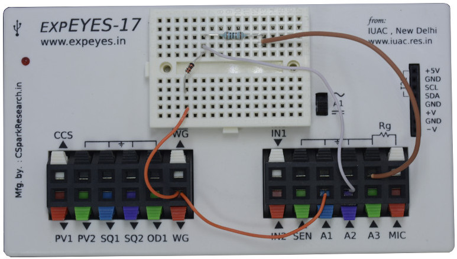
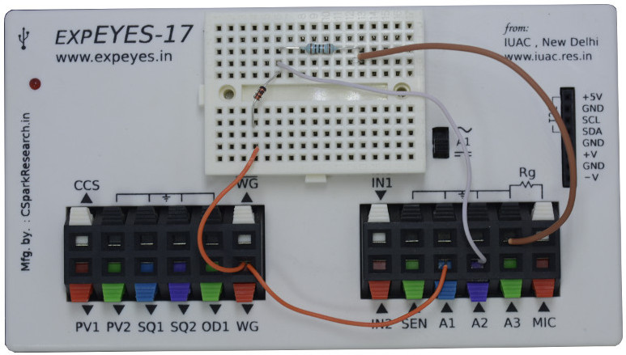

WG generates a sine wave. It is monitored by oscilloscope channel A1. Signal after the diode is monitored by A2. The waveform is observed. It will be a bit noisy without the load resistor, connecting a 1k resistor gives a clean rectified waveform. The voltage drop across the diode is clearly visible. Connect different values of capacitors to view the filtering effect. The wiring diagram, photograph of the connections and the screen shot of the oscilloscope program are shown below.
 
